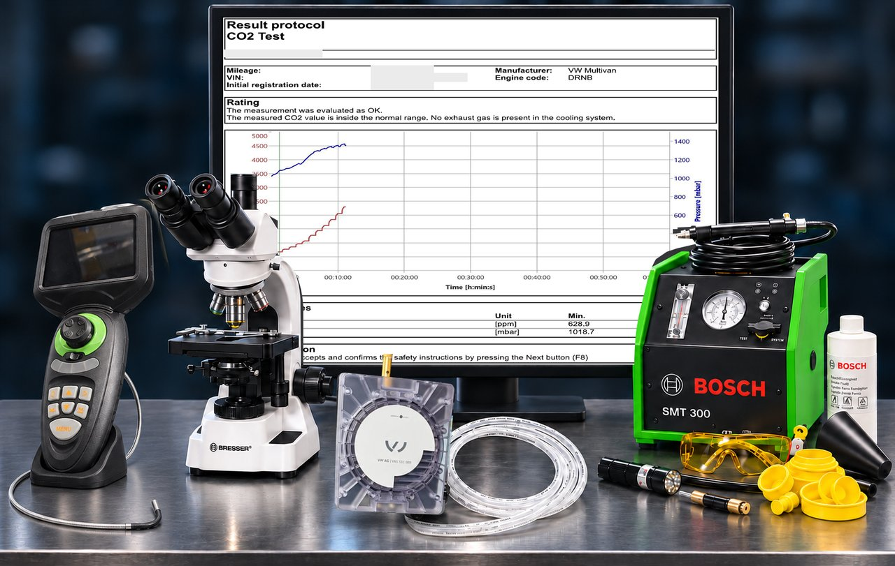
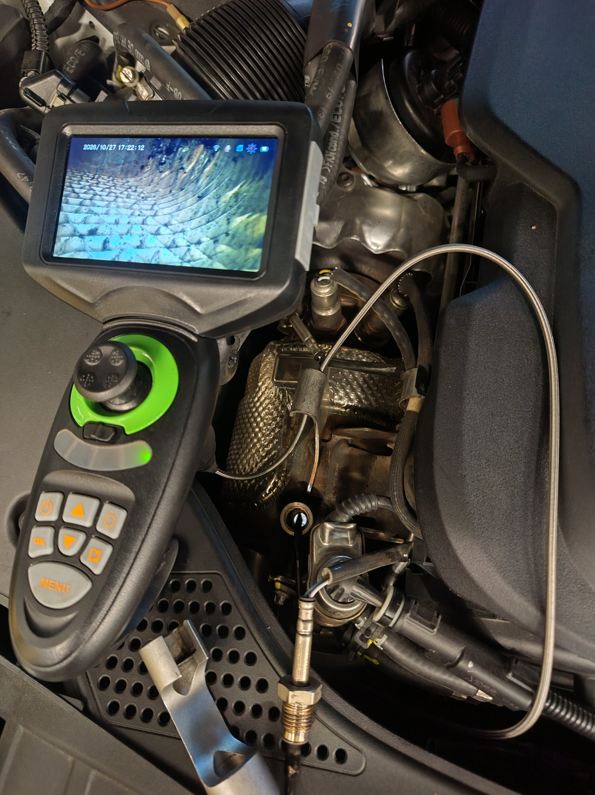
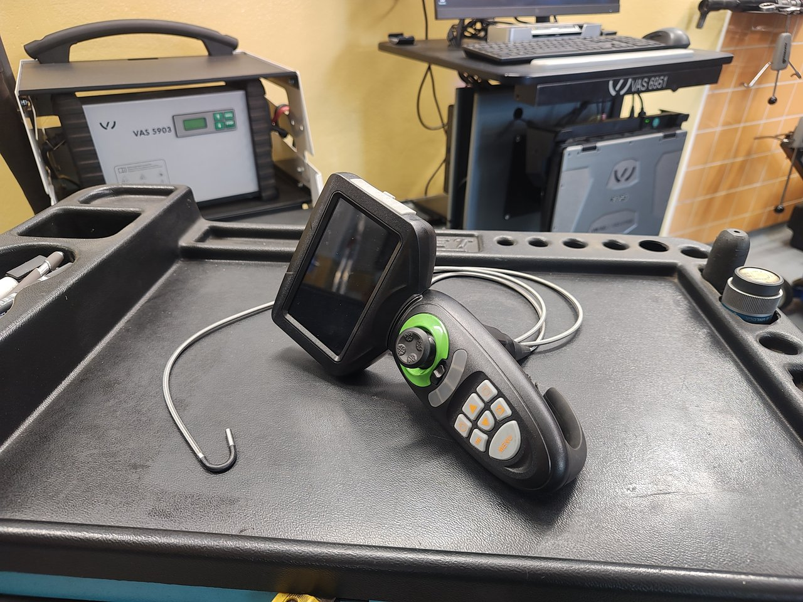
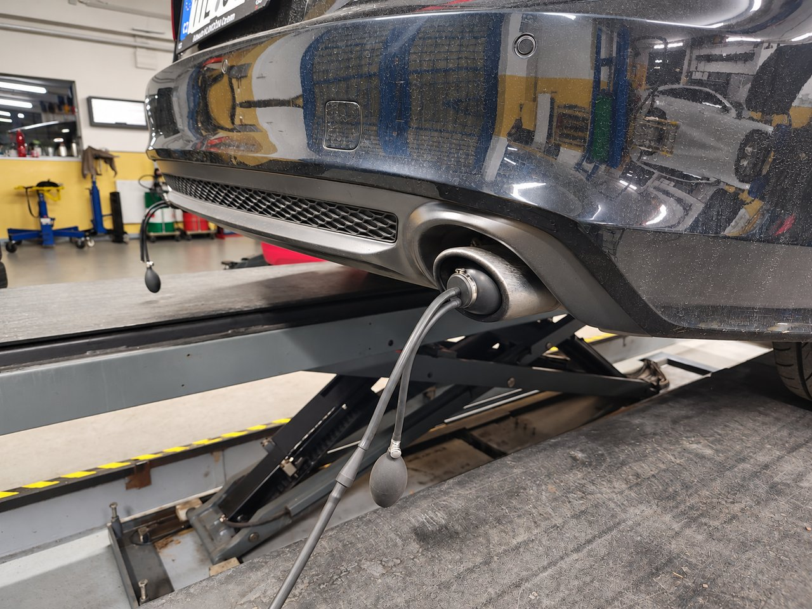

Specializovaná diagnostika


Při hledání příčiny závady je důležité spojit projevy vozidla s výsledky konkrétních měření. Ve specializované diagnostice využíváme cílené zkoušky, které pomáhají rozhodnout o dalším postupu opravy. Rozsah kontroly volíme podle konstrukce vozidla a popsaných potíží.
Metody podle potřeby kontroly
Endoskopie
Endoskopická kontrola motoru a obtížně přístupných součástí
Endoskopie umožňuje prohlédnout vnitřní prostory a součásti, které nejsou při běžné vizuální kontrole přístupné. Používáme kamerový systém s ovládáním směru pohledu sondy v rozsahu 360°. Podle konstrukce vozidla tak můžeme omezit rozsah demontáže potřebné k prvotnímu posouzení závady.




Co lze endoskopem kontrolovat?
- Přístupné části spalovacích prostorů, dna pístů a stěny válců.
- Viditelné úsady a stopy mechanického poškození.
- Přístupné části sacího a výfukového systému.
- Vnitřní strukturu katalyzátoru nebo filtru pevných částic, pokud konstrukce konkrétního vozidla umožňuje zavedení sondy a potřebný výhled.
- Další obtížně přístupná místa podle charakteru závady.
Rozsah kontroly vždy závisí na konstrukci konkrétního motoru nebo součásti, dostupných přístupových otvorech a možnosti bezpečného vedení sondy.
Jak vyhodnocujeme nález?
Endoskopický obraz posuzujeme v souvislosti s projevy závady a výsledky dalších diagnostických zkoušek. Pomáhá nám určit další postup a rozhodnout, zda je potřebná podrobnější kontrola nebo demontáž.
Endoskopie ukazuje stav viditelných ploch. Samotný obraz nepotvrzuje těsnost spalovacího prostoru ani funkční účinnost katalyzátoru nebo filtru pevných částic. Podle nálezu proto kontrolu doplňujeme dalšími měřeními.
Přínos pro zákazníka
Cílená vizuální kontrola poskytuje konkrétní podklad pro vysvětlení nálezu a návrh opravy. V případech, kdy je kontrolované místo dostupné sondou, může pomoci omezit zbytečné rozebírání součástí.
Mikroskopická kontrola provozních kapalin
Mikroskopickou kontrolou vzorků provozních kapalin posuzujeme přítomnost a vzhled pevných částic a nečistot. Nález vyhodnocujeme v souvislosti s druhem kapaliny, místem odběru a projevy závady. Kontrola slouží jako doplňkový podklad pro další diagnostický postup.
Ukázka z praxe: kontrola použitého motorového oleje z motoru 1.4 TSI

Na fotografii je kontrola vzorku použitého motorového oleje pomocí mikroskopu s digitálním zobrazením. Sledujeme vzhled a zastoupení pozorovaných pevných částic a nečistot.
Nález posuzujeme společně s provozními potížemi vozidla a výsledky dalších kontrol. Samotná přítomnost částic nestačí k jednoznačnému určení příčiny závady.
Samotný mikroskopický obraz neumožňuje spolehlivě určit chemické složení částic ani jejich přesný původ. Mikroskopická kontrola nenahrazuje laboratorní rozbor kapaliny.
Měření CO₂
Diagnostika průniku spalin do chladicího systému
Pro kontrolu používáme přístroj AVL DiTEST VAS 531 009. Měří obsah oxidu uhličitého (CO₂) v expanzní nádobce chladicího systému a současně zaznamenává průběh tlaku. Zvýšený obsah CO₂ může ukazovat na průnik spalin do chladicího okruhu.

Kdy je měření vhodné
Při hledání příčiny opakovaného úbytku chladicí kapaliny, neobvyklého tlakování nebo přehřívání motoru může být měření CO₂ součástí diagnostického postupu. Samotné tyto projevy však průnik spalin nepotvrzují. Vhodnost zkoušky posuzujeme podle konkrétního vozidla a výsledků předchozí kontroly.
Jak kontrola probíhá
Přístroj připojíme přes odpovídající adaptér k expanzní nádobce. Při zkoušce sledujeme hodnoty CO₂ a tlaku v čase. Postup a podmínky měření přizpůsobujeme pokynům výrobce vozidla a přístroje. Výstupem měřicího programu je protokol s naměřenými hodnotami a grafickým průběhem.
Přístroj umožňuje kontrolu u studeného i zahřátého motoru. Konkrétní podmínky zkoušky volíme podle předepsaného postupu a okolností, za kterých se závada projevuje.

Jak výsledek vyhodnocujeme
Měření poskytuje podklad pro další diagnostiku, samo však neurčuje konkrétní vadnou součást. Zvýšený obsah CO₂ automaticky neznamená vadné těsnění pod hlavou válců. Podle konstrukce motoru může netěsnost souviset také se systémem recirkulace spalin EGR. Výsledky proto posuzujeme společně s dalšími kontrolami, abychom opravu zaměřili na prokázanou příčinu. Ani výsledek bez zvýšeného CO₂ nelze chápat jako potvrzení bezvadnosti celého chladicího systému.
Ukázka protokolu z měření
Na přiloženém protokolu ze zkoušky vozu Volkswagen Multivan byl výsledek programem vyhodnocen jako OK. Jde o výsledek konkrétního měření za podmínek této zkoušky, nikoli o obecné potvrzení bezvadnosti vozidla nebo celého chladicího systému.

Kouřová diagnostika
Kouřová diagnostika – cílené hledání netěsností
Netěsnosti v jednotlivých systémech vozidla mohou způsobovat provozní potíže, nesprávnou funkci motoru nebo nepříjemné pískání a aerodynamický hluk za jízdy. Pomocí kouřového testeru Bosch SMT 300 vyhledáváme místa netěsností, která při běžné vizuální kontrole nemusí být patrná.



Co kontrolujeme?
- Sací systém – netěsnosti potrubí, hadic, spojů a těsnění, kterými může být přisáván nežádoucí vzduch.
- Podtlakový systém – netěsnosti podtlakových vedení a připojených součástí podle konstrukce vozidla.
- Výfukový systém – úniky ve spojích, těsněních a dalších přístupných částech výfukové soustavy.
- Systém odvětrávání palivové nádrže a zachycování palivových par (EVAP) – netěsnosti vedení, spojů a součástí systému.
- Těsnění oken, dveří a dalších otvorů karoserie – místa nežádoucího proudění vzduchu, která mohou souviset s pískáním, průvanem nebo zvýšeným aerodynamickým hlukem v kabině.
Jak kontrola probíhá?
U vhodných uzavřených systémů zavádíme diagnostický kouř do kontrolovaného okruhu a sledujeme, zda uniká mimo něj. Viditelný únik pomáhá lokalizovat netěsnost a zaměřit následnou opravu na konkrétní místo.

Při kontrole těsnění karoserie sledujeme změny proudění kouře v okolí oken, dveří a těsnicích spár. Tím lze odhalit průchod vzduchu, který může být příčinou hluku za jízdy.
Způsob připojení a podmínky zkoušky volíme podle konkrétního vozidla, kontrolovaného systému a pokynů výrobce. U systému palivových par používáme předepsané zkušební médium a postup.
Jak vyhodnocujeme výsledek?
Nález posuzujeme společně s projevy závady a výsledky dalších kontrol. Kouřová zkouška pomáhá určit místo netěsnosti; její vliv na funkci vozidla nebo hluk v kabině ověřujeme navazující diagnostikou, případně zkušební jízdou.
Přínos pro zákazníka
Přesnější lokalizace netěsnosti pomáhá omezit zbytečnou demontáž a výměnu součástí bez prokázané příčiny. Výsledek poskytuje srozumitelný podklad pro vysvětlení závady a návrh dalšího postupu opravy.
UV diagnostika
Vyhledávání úniků oleje a chladicí kapaliny pomocí UV diagnostiky
Drobné netěsnosti se mohou projevovat pouze pozvolným prosakováním. Unikající kapalina se navíc může šířit po povrchu součástí, takže viditelné znečištění nemusí odpovídat skutečnému místu úniku. UV diagnostika pomáhá tento zdroj přesněji lokalizovat.

Kontrola úniků motorového oleje
Pro vyhledávání netěsností motoru používáme fluorescenční přísadu G 052 940 A1 a UV lampu VAS 231 005. Přísada se smísí s motorovým olejem a umožňuje pomocí UV světla sledovat místo a průběh úniku.
Výraznější únik může být patrný již při chodu motoru v dílně. U drobného prosakování může být nutné vozidlo nejprve projet. Pokud to jeho technický stav dovoluje, zákazník po aplikaci přísady vozidlo dále používá a následně se vrátí na dohodnutou kontrolu. Pomocí UV lampy poté prohlédneme podezřelé oblasti a vyhodnotíme vzniklé stopy.
Použití přísady samo o sobě nemusí vyžadovat mimořádnou výměnu motorového oleje. Vždy však postupujeme podle příslušných pokynů výrobce a technického stavu konkrétního vozidla.
Kontrola úniků chladicí kapaliny
Stejnou UV lampu lze využít také při vyhledávání úniků chladicí kapaliny. Pro tuto kontrolu se používá samostatná fluorescenční přísada určená pro chladicí systémy, jejíž vhodnost musí být ověřena pro konkrétní chladicí kapalinu a vozidlo.
Pod UV světlem lze následně hledat stopy úniku například v okolí hadicových spojů, chladiče, vodního čerpadla a dalších přístupných částí chladicího okruhu. Přísada G 052 940 A1 uvedená výše je určena pro kontrolu úniků motorového oleje.
Cílený podklad pro opravu
Nález vyhodnocujeme v souvislosti s projevy závady a výsledky dalších kontrol. Lokalizace skutečného zdroje úniku pomáhá určit rozsah opravy a omezit zbytečnou demontáž nebo výměnu součástí bez prokázané příčiny.
Objednání kontroly
Při objednání nám popište, za jakých podmínek se potíže objevují a zda byla na chladicím systému nebo motoru nedávno provedena oprava. Podle těchto informací navrhneme vhodný rozsah diagnostiky.